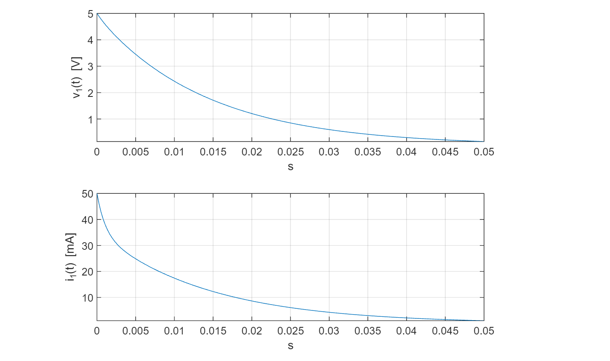

การวิเคราะห์วงจรไฟฟ้ากระแสตรงและจำลองการทำงานด้วย EasyEDA#
บทความนี้กล่าวถึง การวิเคราะห์วงจรพื้นฐานทางไฟฟ้าที่ประกอบด้วย R L C โดยใช้ทฤษฎีทางไฟฟ้าและเปรียบเทียบกับการจำลองการทำงานของวงจรด้วยซอฟต์แวร์ EasyEDA
Keywords: DC Circuits, DC Circuit Analysis, EasyEDA / LTspice, MATLAB
▷ การวิเคราะห์วงจร: DC Steady-State Analysis#
ลองมาดูวงจรในตัวอย่างแรกซึ่งประกอบด้วยแหล่งจ่ายแรงดันไฟฟ้าคงที่ (Constant Voltage Source) ตัวต้านทาน (Resistor: R) ตัวเก็บประจุ (Capacitor: C) และตัวเหนี่ยวนำไฟฟ้า (Inductor: L) ตามผังวงจรไฟฟ้าต่อไปนี้
รูป: วงจรไฟฟ้าและตัวอย่างการวาดผังวงจร (Schematic) ด้วยซอฟต์แวร์ EasyEDA
ในผังวงจร จะเห็นได้ว่า เส้นสัญญาณเชื่อมต่อ หรือ "เน็ต" (Nets) มีการกำหนดหมายเลข 0, 1, ..., 4 ซึ่งโดยทั่วไปแล้ว 0 หมายถึง GND หรือ กราวด์ของวงจร นอกจากนั้นยังได้มีการกำหนดชื่อและชนิดของอุปกรณ์ รวมถึงการเชื่อมต่อกับสายสัญญาณตามที่ปรากฎในไฟล์ SPICE Netlist ของวงจรนี้ เช่น
- R1 เป็นชื่อของตัวต้านทานที่มีขนาด 50 Ω และขาทั้งสองเชื่อมต่อกับเน็ตหมายเลข 1 และ 2 ตามลำดับ
- R2 เป็นชื่อของตัวต้านทานที่มีขนาด 100 Ω และขาทั้งสองเชื่อมต่อกับเน็ตหมายเลข 2 และ 3 ตามลำดับ
- R3 เป็นชื่อของตัวต้านทานที่มีขนาด 100 Ω และขาทั้งสองเชื่อมต่อกับเน็ตหมายเลข 4 และ 2 ตามลำดับ
- R4 เป็นชื่อของตัวต้านทานที่มีขนาด 300 Ω และขาทั้งสองเชื่อมต่อกับเน็ตหมายเลข 3 และ 0 (GND) ตามลำดับ
- C1 เป็นชื่อของตัวเก็บประจุไฟฟ้าที่มีขนาด 100 uF มีขาขั้วบวกและขั้วลบเชื่อมต่อกับเน็ตหมายเลข 1 และ 0 (GND) ตามลำดับ
- L1 เป็นชื่อของตัวเหนี่ยวนำไฟฟ้าที่มีขนาด 100 mH มีขาเชื่อมต่อกับเน็ตหมายเลข 3 และ 0 (GND) ตามลำดับ
- VS เป็นชื่อของแหล่งจ่ายแรงดันไฟฟ้าดีซีที่มีขนาด 10V มีขาขั้วบวกและขั้วลบเชื่อมต่อกับเน็ตหมายเลข 4 และ 0 (GND) ตามลำดับ
รูป: แสดงรายการอุปกรณ์และการเชื่อมต่อในวงจรตามรูปแบบของ SPICE Netlist
ถ้าต้องการทราบว่า มีแรงดันไฟฟ้าและกระแสไฟฟ้าไหลในวงจรอย่างไรบ้าง ภายใต้เงื่อนไขสภาวะคงตัวสำหรับกระแสตรง (DC Steady-State Conditions) จะมีแนวทางการวิเคราะห์อย่างไร ?
เนื่องจากวงจรนี้มีแหล่งจ่ายอิสระที่ให้แรงดันไฟฟ้าคงที่ () ดังนั้นในสภาวะคงตัวสำหรับกระแสตรง จะไม่มีกระแสไหลผ่านตัวเก็บประจุไฟฟ้าและแรงดันตกคร่อมไม่เปลี่ยนแปลง และให้มองว่าไม่มีการเชื่อมต่อทางไฟฟ้าระหว่างขั้วทั้งสองของตัวเก็บประจุ (Open Circuit)
ในขณะที่ตัวเหนี่ยวนำไฟฟ้าจะถูกมองว่า มีความต้านทานเป็น 0 Ω (Short Circuit) ระหว่างปลายทั้งสองด้าน มีกระแสไหลผ่านได้ แต่แรงดันตกคร่อมเป็น 0 V ภายใต้เงื่อนไขดังกล่าว จึงให้ผลเหมือนวงจรต่อไปนี้
รูป: วงจรในสภาวะคงตัวสำหรับกระแสตรง
แหล่งจ่ายแรงดันไฟฟ้ากระแสตรง จะทำให้มีกระแสไหลผ่านตัวต้านทาน กับ แต่ไม่มีกระแสไหลผ่าน เนื่องจากไม่ครบวงจร (Open Circuit) เช่นเดียวกับ เนื่องจากมีการลัดวงจร (Short Circuit)
หากใช้ Kirchhoff's Current Law (KCL) ในการวิเคราะห์ จะได้สมการดังนี้
โดยที่ หมายถึง แรงดันไฟฟ้าที่จุดอ้างอิงตามหมายเลข เทียบกับ GND ของวงจร และ หมายถึง กระแสที่ไหลในวงจรผ่าน และ
ในวงจรนี้ และ ดังนั้นจึงจัดรูปแบบของสมการใหม่ได้เป็น จากนั้นก็สามารถคำนวณปริมาณกระแส ได้ดังนี้
แรงดันตกคร่อมที่ตัวเก็บประจุ เท่ากับ
และกระแสที่ไหลผ่านตัวเหนี่ยวนำ จะได้เท่ากับ
▷ การจำลองการทำงานของวงจร: DC Steady-State Analysis#
ลองมาเปรียบเทียบกับผลการวิเคราะห์วงจรไฟฟ้าด้วยซอฟต์แวร์ EasyEDA (v6.5.3) ในโหมด DC Operating Point (.dc) ดังนี้
V(4)หมายถึง แรงดันไฟฟ้าของ ที่ขั้วบวก จะได้ 10.0 VV(1)หมายถึง แรงดันไฟฟ้าที่ขั้วบวกของตัวเก็บประจุ จะได้ประมาณ 5.0 V และได้เท่ากับV(2)เนื่องจากไม่มีกระแสไหลผ่าน ดังนั้นแรงดันตกคร่อมที่ตัวต้านทานจึงเป็น 0.0 VI(L1)หมายถึง กระแสไฟฟ้าที่ไหลผ่านตัวเหนี่ยวนำไฟฟ้า และได้ค่าประมาณ 0.05 A เช่นเดียวกับกระแสไฟฟ้าI(R2)และI(R3)ที่ไหลผ่าน และ
รูป: ผลการวิเคราะห์วงจรด้วย EasyEDA ในโหมด .dc
ข้อสังเกต: ในการวิเคราะห์วงจรไฟฟ้าด้วย EasyEDA ซึ่งอาศัยโปรแกรม LTspice เป็นตัวจำลองการทำงานของวงจร เนื่องจากเป็นการประมวลผลเชิงตัวเลข (Numerical Computing) ค่าที่ได้ซึ่งเป็นเลขทศนิยม อาจมีความแตกต่างจากค่าที่คำนวณได้ในเชิงทฤษฎี แต่ความคลาดเคลื่อนของผลลัพธ์ที่ได้นั้นถือว่าน้อยมาก
▷ การจำลองการทำงานของวงจร: DC Transient Analysis#
จากผังวงจรในตัวอย่างที่แล้ว หากแก้ไขวงจรเล็กน้อย โดยใส่สวิตช์ไฟฟ้า (Switch) เพิ่มในวงจร และให้สวิตช์ SW1 ถูกเปิดขึ้น (เปลี่ยนสถานะจาก Close เป็น Open) เมื่อเวลา วินาที เพื่อแยกแหล่งจ่าย ออกจากวงจรไฟฟ้า
รูป: การเพิ่มสวิตช์ในวงจร และถูกเปิดออกเมื่อเวลา
ในตัวอย่างนี้ เมื่อเวลา ตัวเก็บประจุไฟฟ้า และตัวเหนี่ยวนำไฟฟ้า มีพลังงานเก็บอยู่ภายใน ดังนั้นสถานะเริ่มต้นของวงจรจึงไม่เป็นศูนย์ (Non-Zero Initial Conditions) และสามารถหาได้โดยการวิเคราะห์ในโหมด .dc
(DC operating point) ตามที่ได้นำเสนอไปแล้ว
ผลตอบสนองของวงจรตั้งแต่เวลา เป็นต้นไป จึงขึ้นอยู่กับสถานะเริ่มต้นของวงจร และเรียกผลตอบสนองในลักษณะนี้ว่า ผลตอบสนองธรรมชาติ (Natural Response)
เมื่อไม่มีแหล่งจ่าย อยู่ในวงจรแล้ว และเวลาผ่านไป วงจรจะเข้าสู่สถานะคงตัว (DC Steady State) ดังนั้นจึงไม่มีกระแสไหลผ่าน และแรงดันตกคร่อมที่ตัวเก็บประจุ เป็น 0V
คำสั่ง SPICE directive สำหรับการวิเคราะห์วงจรในโหมด DC Transient คือ
.tran ซึ่งจะต้องมีการกำหนดเวลาเริ่มต้นและเวลาจบการจำลองการทำงาน เช่น 0 ถึง 50 msec
ในช่วงเวลาดังกล่าวจะต้องมีการแบ่งออกเป็นช่วงย่อยที่เรียกว่า Step Size เช่น 5 usec
เพื่อการวิเคราะห์สถานะของวงจรในแต่ละช่วงย่อย
คำสั่ง .ic เป็นการกำหนดเงื่อนไขเริ่มต้น (Initial Conditions)
เช่น สำหรับแรงดันตกคร่อมของตัวเก็บประจุ และกระแสที่ไหลในขณะนั้นสำหรับตัวเหนี่ยวนำไฟฟ้า
ตามรูปแบบต่อไปนี้
.save I(L1) V(1)
.ic V(1)=5V I(L1)=0.05A
.tran 0 50m 0 5u
จากการจำลองการทำงาน จะเห็นได้ว่า V(1) ซึ่งเป็นแรงดันตกคร่อมที่ตัวเก็บประจุ
ที่เวลาเริ่มต้น มีค่าเท่ากับ จากนั้นจะลดลงจนเป็นศูนย์ ในขณะที่ I(L1)
ซึ่งเป็นกระแสไฟฟ้าที่ไหลผ่าน มีค่าเริ่มต้นที่ จากนั้นจะลดลงจนเป็นศูนย์
รูป: แสดงรูปกราฟสำหรับแรงดันตกคร่อมที่ และกระแสที่ไหลผ่าน
อีกรูปแบบหนึ่งในการกำหนดเงื่อนไขเริ่มต้นให้กับตัวเก็บประจุและตัวเหนี่ยวนำไฟฟ้าในวงจร คือ การเพิ่มคำสั่ง ic
(Set Initial Condition) เจาะจงสำหรับอุปกรณ์แต่ละตัว โดยการเขียนต่อท้ายข้อความที่กำหนดค่าของอุปกรณ์ และท้ายคำสั่ง .trans จะต้องเขียนคำว่า uic เพิ่มตามรูปแบบต่อไปนี้
รูป: ตัวอย่างการวาดผังวงจรและกำหนดเงื่อนไขเริ่มต้น
▷ การวิเคราะห์วงจรไฟฟ้า: DC Switching Analysis#
หากต้องการจำลองการเปิดและปิดสวิตช์ SW1 ตามช่วงเวลาที่กำหนด ในกรณีนี้ เราก็สามารถเลือกใช้อุปกรณ์ที่เรียกว่า
VCSW (Voltage-Controlled Switch) แล้วนำมาต่อในวงจร และกำหนดคุณสมบัติของอุปกรณ์ VCSW ได้โดยใช้คำสั่ง .model ของ SPICE directive เช่น การกำหนดระดับแรงดัน vt (Threshold Voltage) ที่ทำให้สวิตช์ทำงาน (Close หรือ ON) และค่าความต้านทานของสวิตช์ ron และ roff ในสถานะ ON และ OFF ตามลำดับ แต่จะต้องมีการสร้างสัญญาณไฟฟ้าควบคุมการเปิดและปิดสวิตช์ด้วย ในกรณีนี้เราจะใช้แหล่งจ่ายแบบสัญญาณพัลส์ (PULSE)
รูป: ตัวอย่างการวาดผังวงจรที่มีการใช้งาน VCSW
จากรูปตัวอย่างจะเห็นได้ว่า สวิตช์จะเริ่มทำงานในช่วงเวลา t=0 msec เป็นต้นไป อยู่ในสถานะ ON จนถึงเวลา t=60 msec จะเปลี่ยนสถานะเป็น OFF การทำงานและสถานะของสวิตช์ SW1 ถูกกำหนดโดยระดับแรงดันของแหล่งจ่าย VP ที่สร้างสัญญาณแบบ PULSE ตามการตั้งค่าในรูปตัวอย่าง (Voltage Source Settings)

รูป: ตัวอย่างการจำลองการทำงานของวงจรและรูปกราฟของสัญญาณ
▷ การวิเคราะห์วงจรไฟฟ้า: DC Transient Analysis#
ถ้ากำหนดให้ และ เป็นแรงดันไฟฟ้าที่จุดอ้างอิงหมายเลข 1 และ 3 เทียบกับ GND ของวงจร และให้ เป็นกระแสที่ไหลผ่านตัวเหนี่ยวนำ และ เป็นแรงดันไฟฟ้าตกคร่อมที่ตัวเก็บประจุ เมื่อการวิเคราะห์วงจรด้วย KCL จะได้สมการดังต่อไปนี้
จากนั้นให้หา จากสมการ Eq.2 แล้วไปแทนที่ลงในสมการ Eq.1 และ Eq.3 ตามลำดับ
และเขียนสมการ Eq.1 และ Eq.3 ซึ่งเป็นสมการเชิงอนุพันธ์ (Differential Equations) ที่มีฟังก์ชัน และอนุพันธ์ ได้ดังนี้
เราจะได้ระบบสมการเชิงอนุพันธ์ที่มีเงื่อนไขเริ่มต้น และ และสามารถเขียนโปรแกรมคอมพิวเตอร์เพื่อหาผลเฉลยสำหรับฟังก์ชัน และ และแสดงรูปกราฟของฟังก์ชันที่เป็นผลเฉลยตามแนวทางต่อไปนี้
ลองมาดูตัวอย่างการเขียนโค้ด MATLAB โดยใช้วิธีประมวลผลเชิงสัญลักษณ์สำหรับการวิเคราะห์วงจร และหาผลเฉลยของสมการเชิงอนุพันธ์
clearvars; clf;
syms t v1(t) v3(t) i1(t)
syms C1 L1 R1 R2 R4 positive
% write equations
eq1 = -C1*diff(v1,t) == (v1-v3)/(R1+R2)
eq2 = i1 + v3/R4 == (v1 - v3)/(R1+R2)
eq3 = diff(i1,t) == v3/L1
% rewrite eq2 the expression for v3
v3_expr = collect( rhs( isolate(eq2, v3) ), [i1 v1])
% substitute the expression of v3 in eq1 and eq3
eq1 = isolate( subs( eq1, v3, v3_expr ), diff(v1,t) )
eq3 = isolate( subs( eq3, v3, v3_expr ), diff(i1,t) )
% apply specific values to circuit parameters
params = [L1 C1 R1 R2 R4];
values = [100e-3 100e-6 50 100 300];
% substitute circuit parameters in the equations with specific values
% define the differential equation system
ode = [subs(eq1,params,values), subs(eq3,params,values)].'
% set the initial conditions
ics = [v1(0)==5, i1(0)==0.05];
% show the ODE in matrix form: Y1=i1 and Y2=v1
[V,S] = odeToVectorField(ode)
% solve the ODE system with initial conditions
[i1, v1] = dsolve( ode, ics );
% plot v1 and i1
% set time range 0 to 50 msec
t_range = [0,0.05];
% create a figure with two subplots
figure
subplot(2,1,1)
% plot v1(t) on the first subplot
fplot( v1, t_range ), ylabel('v_1(t) [V]'),
xlabel('s'), grid on
% plot i1(t) on the second subplot
subplot(2,1,2)
fplot( 1000*i1, t_range ), ylabel('i_1(t) [mA]'),
xlabel('s'), grid on
จากโค้ด MATLAB ลองมาดูตัวอย่างเอาต์พุตที่ได้จากการรันโค้ดบางส่วนดังนี้
รูป: ตัวอย่างการรันโค้ด MATLAB (ส่วนที่ 1)
รูป: ตัวอย่างการรันโค้ด MATLAB (ส่วนที่ 2)
กราฟสำหรับฟังก์ชัน และ ซึ่งเป็นผลเฉลยของระบบสมการเชิงอนุพันธ์ ก็มีลักษณะเหมือนกับผลลัพธ์ที่ได้จากการจำลองการทำงานด้วย EasyEDA

รูป: แสดงรูปกราฟสำหรับฟังก์ชัน และ ในช่วงเวลา msec
▷ กล่าวสรุป#
บทความนี้นำเสนอตัวอย่างการวิเคราะห์วงจรไฟฟ้ากระแสตรงที่ประกอบด้วย R L C และใช้ซอฟต์แวร์ EasyEDA / LTspice จำลองการทำงานและเปรียบเทียบผลที่ได้ นอกจากนั้นแล้วยังมีตัวอย่างโค้ด MATLAB ที่ใช้วิธีการประมวลผลเชิงสัญลักษณ์เพื่อช่วยในการวิเคราะห์วงจร
หากสนใจตัวอย่างเพิ่มเติมสำหรับการเขียนโค้ด MATLAB หรือ Python เพื่อหาผลเฉลยของสมการเชิงอนุพันธ์สามัญ ด้วยวิธีการคำนวณเชิงสัญลักษณ์และเชิงตัวเลข สามารถอ่านเนื้อหาเพิ่มเติมได้จากบทความภาษาไทยต่อไปนี้
- "ODE Solving with Python" ตัวอย่างการเขียนโค้ด Python เพื่อหาผลเฉลยของสมการเชิงอนุพันธ์
- "ODE Solving with Python - Laplace Transforms" ตัวอย่างการเขียนโค้ด Python เพื่อหาผลเฉลยของสมการเชิงอนุพันธ์ด้วยวิธีการแปลงลาปลาซและประมวลผลทางคณิตศาสตร์เชิงสัญลักษณ์
- "ODE Solving with MATLAB" ตัวอย่างการเขียนโค้ด MATLAB เพื่อหาผลเฉลยของสมการเชิงอนุพันธ์
- "ODE Solving with MATLAB - Laplace Transforms" ตัวอย่างการเขียนโค้ด MATLAB เพื่อหาผลเฉลยของสมการเชิงอนุพันธ์ด้วยวิธีการแปลงลาปลาซและประมวลผลทางคณิตศาสตร์เชิงสัญลักษณ์
This work is licensed under a Creative Commons Attribution-ShareAlike 4.0 International License.
Created: 2022-04-26 | Last Updated: 2022-04-29